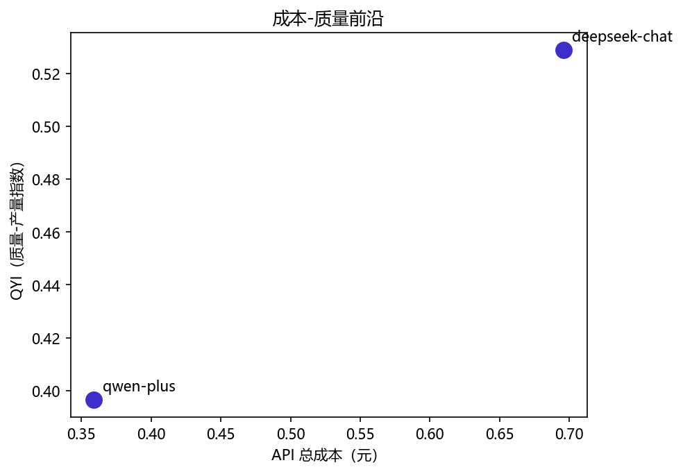
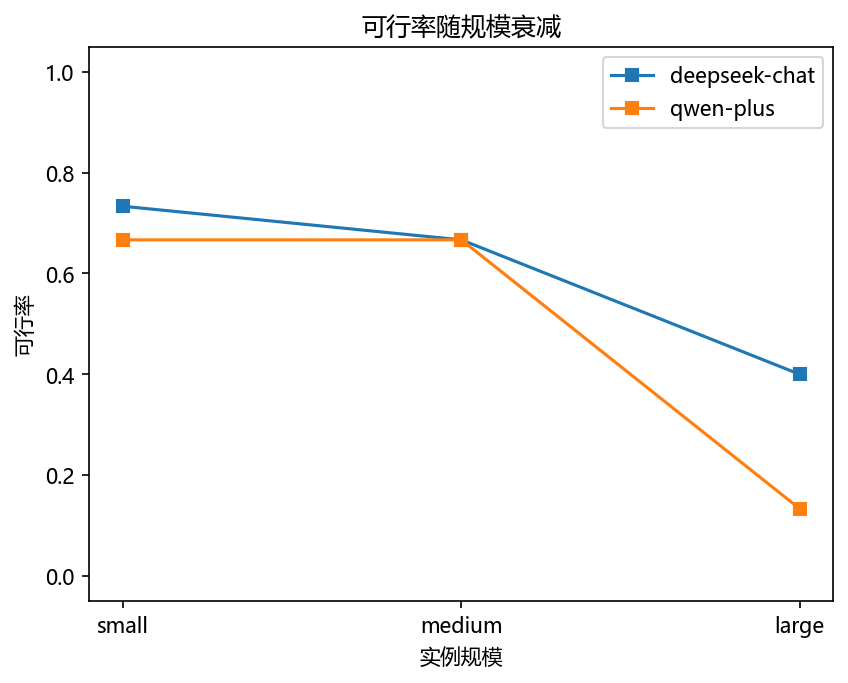
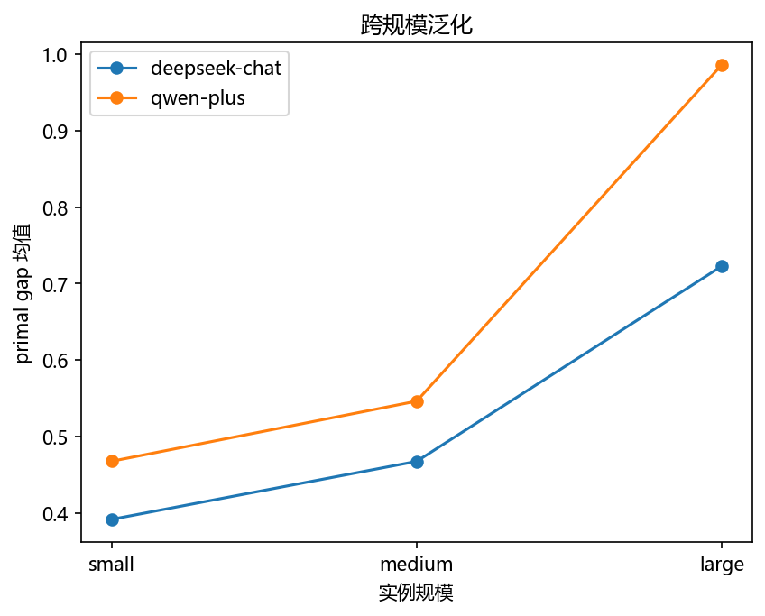
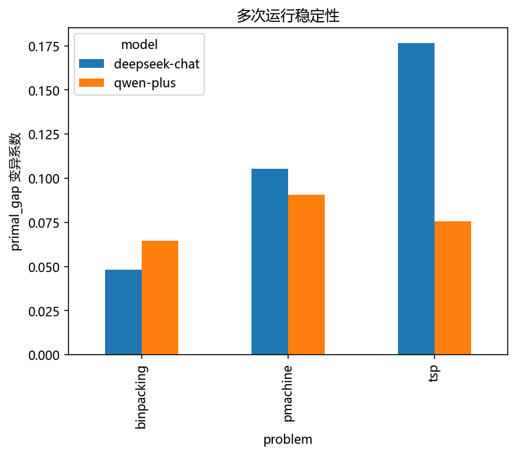
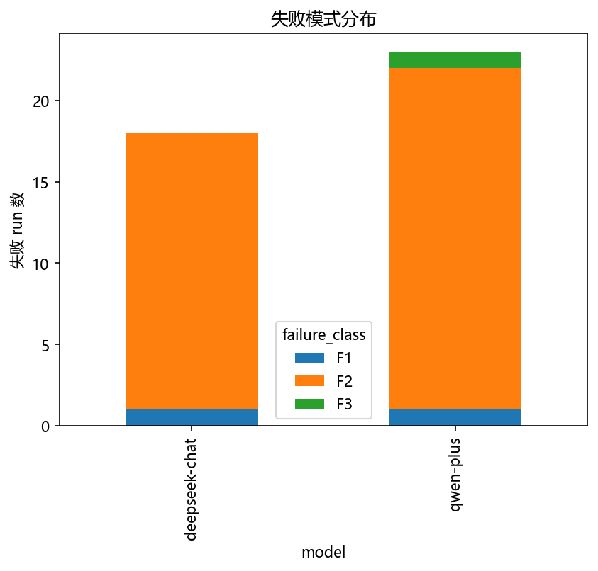

成本受控、可复现的 LLM 与 OR 评测体系
——EvalBench 的设计、实现与实证
《优化理论方法》课程大作业 · 研究方向五：成本受控、可复现的 LLM 与 OR 评测体系
本工作为 LLM×OR 交叉领域构建了一套小型但完整的评测体系 EvalBench：以三重预算控制器把 API 成本变成每次运行的事前硬约束，以配置快照、git 哈希与全量对话落盘构成审计式可复现链，以 F1–F6 六类失败编码替代散文式失败描述。在 2 模型 × 3 问题 × 3 规模 × 360 次运行、总成本约 ¥4.4 的实证中：可行率随规模显著坍塌（H1 支持）、约束违背占失败的 93%（H2 支持）、预登记的模型性价比假设被数据证伪（H4 按原陈述不成立）——预注册式假设检验的价值得到直接体现。
§摘要
大语言模型（LLM）与运筹优化（OR）的结合正在快速发展，但领域评测实践存在系统性缺陷：指标口径不统一、成本维度缺失、可复现协议不完整、失败模式仅有定性描述、稳定性几乎无人报告。本工作面向"成本受控、可复现的 LLM 与 OR 评测体系"这一选题，完成了从文献分析、体系设计、原型实现到实验实证的完整闭环。主要贡献包括：（1）基于六篇代表性文献的精读，构建 5 基准 × 8 维度能力矩阵，提炼出六条领域缺陷 D1–D6；（2）设计并实现评测系统 EvalBench——统一多维指标（primal gap / quality / QYI / stability_cv / 五列成本计量）、三重预算控制器（调用次数 / token 总量 / 墙钟时间）、审计式可复现协议（YAML 配置快照 + git 哈希 + 提示词版本化 + 全量 transcript 落盘）、F1–F6 失败模式自动分类；（3）以 TDD 开发全部核心模块（40 个测试全部通过）；（4）在 2 模型 × 3 问题 × 3 规模上完成主实验（90 runs）与稳定性实验（270 runs），按预登记假设组织统计检验。关键实证发现：可行率随规模断崖式下降（如 qwen-plus 调度问题从 100% 跌至 0%，Fisher 精确检验 p = 1.5×10⁻¹¹）；约束违背 F2 占全部失败的 93%（二项检验 p = 5.2×10⁻⁹）；预登记的"两模型 QYI 接近但性价比差异 ≥2 倍"假设被证伪——实际 QYI 差 0.132、性价比比仅 1.45；经典启发式基线（NN+2-opt / FFD / LPT）以零 API 成本全面优于两个 LLM 的直接求解。整个实验总成本约 ¥4.4，远低于 ¥20 的预算估算，验证了成本受控设计的有效性。
关键词：大语言模型；运筹优化；评测体系；成本控制；可复现性；失败模式分类；组合优化
1引言
1.1 研究背景
大语言模型正在被系统性地引入运筹优化领域：从自然语言建模优化问题（NL4Opt）、生成启发式算法（FunSearch、EOH、ReEvo），到直接作为求解智能体输出组合优化问题的解。Ros 等人对 103 篇文献的 PRISMA 系统综述表明，该方向在 2022–2024 年间呈爆发式增长，路由、调度、装箱等经典 OR 问题均有 LLM 应用的尝试[6]。与此同时，一系列评测基准（CO-Bench、HeuriGym、FrontierCO、DynaSchedBench）相继提出，试图回答"LLM 在 OR 问题上的能力边界在哪里"。
然而，当把视角从"LLM 能力有多强"转向"评测本身是否可信"时，领域暴露出系统性问题。Ros 综述记录的乱象包括：103 篇研究动用 70 个 LLM 且命名混乱、7 篇完全不写用了什么模型、提示词普遍不公开、chat 补全接口的非确定性无人讨论[6]。更结构性的缺陷在于：几乎所有基准把"成本"当作事后统计量而非事前控制变量，把"失败"当作散文式轶事而非可统计编码，把"稳定性"留给读者想象。这意味着文献中报告的"进步"既无法归因、也无法复现，更无法回答实践者最关心的问题：给定预算与锁定协议，模型的能力—成本曲线长什么样？失败以什么模式发生？
1.2 研究问题与选题定位
本作业选择课程方向五"成本受控、可复现的 LLM 与 OR 评测体系"。区别于"再做一个更大的基准"（CO-Bench 36 类问题 6,482 实例[1]、FrontierCO 百万节点级实例[3]沿"问题覆盖 × 规模"军备竞赛路线），本工作刻意反向取舍：以三个可确定性机器验证的经典问题（TSP、一维装箱、平行机调度）为载体，把评测的深度做在"成本受控"与"可复现"两个被领域系统性忽视的维度上。四大基准回答"LLM 能力边界在哪"，EvalBench 回答"给定预算与锁定协议，能力—成本关系与失败结构长什么样"。
1.3 工作概览与贡献
本工作按"文献分析 → 体系设计 → 原型实现 → 实验实证"四阶段推进，全部产物（文献笔记、设计文档、代码、实验数据、本报告）随 git 仓库版本化。主要贡献可概括为四点：
- C1 领域缺陷清单：精读六篇代表性文献（四篇 OR 评测基准、一篇系统综述、一篇方法论迁移文献），构建 5 基准 × 8 维度能力矩阵，提炼六条领域缺陷 D1–D6，为设计提供逐条对应的文献依据（§2）。
- C2 评测体系设计：统一多维指标体系（含稳定性这一被全矩阵忽视的维度）、三重预算控制器、审计式可复现协议、F1–F6 失败模式分类法——每项设计均明确对应一条缺陷的对策（§3）。
- C3 原型实现：Python 评测系统 EvalBench，测试驱动开发，40 个单元测试全绿；工程过程中发现并修复计划代码中的两处真实缺陷（§4）。
- C4 实证与假设检验：主实验 + 稳定性实验共 360 次运行、总成本 ≈¥4.4；按预登记假设组织统计检验，其中一条预登记假设被数据证伪——这本身是预注册方法价值的直接证据（§5）。
2相关工作与领域缺陷分析
2.1 六篇文献概览
本节基于六篇文献的结构化精读笔记。四篇为 2025–2026 年的 LLM×OR 评测基准（CO-Bench、HeuriGym、FrontierCO、DynaSchedBench），一篇为领域首篇 PRISMA 系统综述（Ros 等），一篇为软件工程领域的方法论迁移参考（FuzzGPT——其"用历史失败样本做种子引导困难输入生成"的方法可迁移到 OR 评测的困难实例生成）。表 1 汇总六篇文献的定位与评测要素。
| 文献 | 发表 | 定位与规模 | 质量指标 | 成本维度 | 可复现性 | 失败分析 |
|---|---|---|---|---|---|---|
| CO-Bench[1] | arXiv 2025 | 36 类 CO 问题、6,482 实例；评测 LLM agent 搜索算法的能力 | AvgScore（min/max 比值）+ BTScore、Above Human | ✗ 不记 token/费用 | △ 代码数据公开，未锁种子与提示词 | △ 定性 5 条 |
| HeuriGym[2] | ICLR 2026 | 9 个 CO 问题、218 实例；评测 LLM 生成启发式程序的能力 | QUALITY 截断比 + QYI 调和平均 + SOLVE 三阶段 | ✓ token 全记录 + 价格表 + 成本散点图，但无预算闸门 | ✓ API 快照锁定、提示词全文公开 | ✓ 四分类 + 六类异常 |
| FrontierCO[3] | ICLR 2026 | 8 个 CO 问题、约 300+ 实例；真实世界与极端规模（TSP 至千万城市） | primal gap（严格有界 [0,1]） | ✗ 无 token 量化 | △ 基线锁定，但底座模型版本未披露 | △ 定性观察（高方差、OOM） |
| DynaSchedBench[4] | ICML 2026 | 动态柔性作业车间调度单域；难度校准的实例生成（SESC/SSI） | 归一化 makespan（含 p50/p90） | ✓ token 一等指标，但无预算上限 | ✓ 快照仿真 + 5 种子 + 温度 0 | △ 机理级个案条目 |
| Ros 等综述[6] | ACM CSUR 2025 | 103 篇 PRISMA 系统综述；领域乱象与开放问题的权威清单 | 附录罗列大量异构指标 | ✗ 无 per-study 成本字段 | —（记录他人不可复现） | — |
| FuzzGPT[5] | ICSE 2024 | （迁移文献）DL 库模糊测试；历史失败做种子引导困难输入生成 | — | — | — | ✓ 失败样本系统再利用 |
2.2 能力矩阵与六条缺陷
将四篇基准沿八个评测维度（问题覆盖、实例规模、质量指标、可行性指标、成本记录、预算控制、可复现协议、失败模式分析）逐格对照，得到一个清晰的格局：领域沿"问题覆盖 × 规模"方向军备竞赛，而在成本与失败两个维度系统性薄弱——CO-Bench 与 FrontierCO 完全不记 token，HeuriGym 与 DynaSchedBench 记录了 token 却都无预算上限；四家的失败分析至多是"分类列表 + 异常日志"，无一家与预算或规模交叉统计。由此提炼六条缺陷，每条均有明确文献证据：
- D1 指标口径不统一：CO-Bench 的 min/max 比值在目标值符号相反时失真（h=−5, h*=3 得 0.6，明显高估）；路由文献惯用 gap 可超 100%；FrontierCO 的有界 primal gap 与前两者不可换算。Ros 综述明言"开发标准化评测协议与识别合适指标"是领域公开问题[6]。
- D2 成本维度缺失或浅表：成本在整个领域至多是事后统计量，没有任何基准设预算上限、更没有预算档位实验。HeuriGym 画了成本—质量散点图但无熔断机制；DynaSchedBench 把 token 升为一等指标（L1+Tool 12.6M vs L1 CoT 4.0M，三倍成本未见收益）但同样不设上限[2][4]。
- D3 可复现协议不完整：模型版本不锁定（Ros 综述期间多款模型已弃用；FunSearch/ReEvo 底座模型未披露）、提示词不透明、输出非确定性三重叠加。FuzzGPT 主力模型 Codex 已被弃用致主结果无法严格复现，跨领域实证了不锁定版本的后果[3][5]。HeuriGym 的 API 快照锁定是领域最佳实践[2]。
- D4 失败模式只有定性描述：CO-Bench 归纳 5 条（如"struggle to ensure the feasibility of solutions"）；FrontierCO 报告高方差与 OOM 但无编码；做得最完整的 HeuriGym 也未与成本或预算关联[1][3]。
- D5 稳定性几乎无人报告：四基准均为单次运行；FrontierCO 观察到 FunSearch TSP-hard 方差 ±25.62%，但其标准差来自跨实例而非重复；最接近的 DynaSchedBench 每配置 5 种子控制的也只是实例生成侧随机性[3][4]。
- D6 基准规模两极失衡：一端是 10–100 条目的 toy 数据集自产自销（Ros 综述：多数数据集仅被 1 篇使用且往往就是提出者）；另一端是千万节点级实例上区分度坍塌（FrontierCO：MDS-hard 上神经方法 gap 全 100%，"大量 gap=1 的记录更多反映能否产出可行解而非解质量梯度"）[3][6]。
能力矩阵的取舍逻辑
EvalBench 在规模上以三个数量级以上的差距小于 CO-Bench / FrontierCO（3 问题 3 规模 45 实例 vs 6,482 实例 / 千万节点），用"成本受控 + 可复现"的深度换问题广度。这一取舍显式回应 D6：规模档（TSP n=10/50/200 等）选在"可确定性机器验证、中小规模、有质量梯度"的中间地带，全部可行性由组合性质精确判定，不依赖大规模参考求解器。
3EvalBench 评测体系设计
3.1 设计原则与总体架构
EvalBench 的智能体循环为"生成 → 解析 → 验证 → 反馈"四步：模型按题面要求输出解的 JSON 表示，解析器容错提取（支持 markdown 围栏），验证器逐约束检查并输出违规描述，违规信息作为反馈注入下一轮，至多迭代 max_iters=5 轮。每次运行受三重预算约束，全过程落盘。设计遵循三条原则：每个指标有精确公式与文献出处（对策 D1）、预算是事前硬约束而非事后统计（对策 D2）、配置 + 日志全留存的审计式可复现（对策 D3）。
3.2 指标体系（对策 D1、D5）
指标层直接收编两家精华：FrontierCO 的 primal gap 双分支公式（严格有界、符号异常防护）+ HeuriGym 的 QYI 调和平均（强惩罚质量—可行率失衡），并补上全矩阵无人作为一等指标报告的稳定性。每个指标执行五要素定义——名称、精确公式、取值范围、采集列、文献出处——并以 TDD 锁死在代码里。指标总表见表 2。
| 指标 | 精确公式 | 范围 | 出处 |
|---|---|---|---|
| primal_gap | cost 为 None/非有限或 cost·ref<0 → 1；否则 |cost−ref| / max{|cost|,|ref|} | [0,1]，不可行=1 | FrontierCO 式 2（渊源 Berthold 2006/2013） |
| quality | cost 为 None 或 ≤0 → 0；否则 clip(ref/cost, 0, 1) | [0,1] | HeuriGym QUALITY 截断比 |
| QYI | 2·q·y/(q+y)，q=组内 quality 均值，y=组内可行率 | [0,1] | HeuriGym（类比 F-score） |
| tokens_in/out calls / seconds | 逐轮 API usage 求和 / Budget 计数与墙钟 | ≥0 | HeuriGym Table 24；DynaSchedBench |
| api_cost | Σ [tokens_in/1e6×p_in + tokens_out/1e6×p_out]，价格表带核对日期 | ≥0 元 | HeuriGym Table 6 |
| stability_cv | pstdev/mean（同实例 k 次重复的 primal_gap 序列） | [0,∞)，完美稳定=0 | 本工作提出（对策 D5） |
| failure_class | F1–F6 自动编码，优先级 F5>F1>F3>F4>F2>F6 | {F1…F6, 无} | 扩展 HeuriGym 四分类（对策 D4） |
三个设计决策值得论证。其一，primal_gap 与 quality 双指标并存：前者严格有界且满足"不可行解永不优于可行解"的评测公理，后者语义自解释（0.8 = 花了参考 1.25 倍的成本）；两者由同一 (cost, reference) 对计算、零额外采集成本，在"参考解非严格最优"的现实下互补。其二，QYI 用调和平均：算术平均在 q=1.0、y=0.1 时得 0.55（看似过半），调和平均得 0.18（暴露"解得好但十次九次不可行"）——评测要回答的恰恰是模型均衡还是偏科。其三，stability_cv 用变异系数而非标准差：同样 σ=0.05 在 μ=0.1 的组是 50% 相对波动、在 μ=0.8 的组只有 6%，CV 无量纲、跨组可比。
参考解口径：所有 reference 由本地确定性求解器计算并缓存（references.json）。三问题的 small 档全部落在精确分支（TSP n≤10 全排列枚举；装箱 ≤25 项 CP-SAT；调度 ≤25 作业 CP-SAT），medium/large 档为启发式或限时搜索（TSP 用 OR-Tools 路由求解器 GUIDED_LOCAL_SEARCH 30 秒；装箱 >25 项用 FFD 上界；调度 >25 作业用 LPT）。因此全部 gap/quality 读作"相对 OR-Tools 30 秒口径参考解"，不读作"相对真最优"——口径诚实声明写入协议文档。
3.3 成本受控机制（对策 D2）
预算控制分三层。运行级：三重预算控制器 Budget(max_calls=10, max_tokens=60000, max_seconds=600) 随每次求解构造、每轮迭代先检查再调用；任一闸门触发即抛出 BudgetExhausted 异常，运行正常收尾并计为失败类 F5——预算耗尽不是事故而是被编码的实验事件。项目级：成本熔断线 ¥50，超出立即中止排查。机制级双保险：单运行 token 闸封顶 60K，360 runs 的极端上界 ≈ 21.6M tokens，即使全部按较贵的 DeepSeek 单价折算也仅 ≈ ¥86 的理论极限（实际路径远低于此）。
与四大基准的本质区别在于：HeuriGym 的成本是"跑了多少"的事后统计，EvalBench 的预算是"最多许跑多少"的事前约束——同预算下的比较才构成公平比较（主实验全部 90 runs 统一 standard 档预算，不随问题难度浮动）。
3.4 可复现协议（对策 D3）
协议的核心等式是"实验 = 目录 + 配置"：每次运行的 run_id（时间戳 + 随机后缀）对应一个自包含目录，内含四件套——config.yaml（配置原样快照）、manifest.json（版本锚：run_id / created / git commit 哈希 / prompt_version / system_prompt 全文）、summary.csv（18 列结构化结果）、transcripts/（每次 LLM 调用的完整输入输出，含逐轮 latency 与 token 计量）。
三层版本锚定：（a）模型与采样参数写入 YAML 快照；（b）提示词不放在配置里，而是固化在 problems/*.py 的 prompt() 方法中——"提示词即代码，代码即版本"，一个 git 哈希同时锁定提示词、验证器与反馈话术；（c）依赖随 requirements.txt 版本化。断点续跑机制使"中断恢复"不需要任何额外记账：重启时从既有 summary.csv 重建已完成集合，同配置自动跳过。
诚实性声明：商用 API 即使固定温度也不承诺逐 token 复现，因此 EvalBench 不宣称位级复现，而承诺审计式可复现——任何人可在同一 git 哈希下重建输入、核对 transcript 原文、重算指标；每个数字可追溯到一次具体的 API 调用，但重跑不保证相同数字。输出波动不是被回避的缺陷而是被测量的对象（stability_cv）。把不可消除的随机性升为一等指标、把不可完整锁定的版本做成可审计链条，这本身是对 D3/D5 的方法论回应。
3.5 失败模式分类（对策 D4）
HeuriGym 的失败分类对象是程序执行过程（其被测智能体输出完整启发式程序，失败以异常类型出现）；EvalBench 的智能体输出解的 JSON 表示，失败发生在解的生成过程。两套分类维度不同、互不可替代。F1–F6 定义与判定信号见表 3，全部判定自动、机器可复判。
| 类 | 名称 | 定义 | 确定性代码信号 | 事前预测 |
|---|---|---|---|---|
| F1 | 解析失败 | 无法从输出提取规定 JSON | 末轮 parsed == False | 中（大规模升高） |
| F2 | 约束违背 | 解结构合法但不满足组合/容量约束（缺失、重复、超容量） | 末轮 violations 非空且不含越界词 | 高（最大类） |
| F3 | 幻觉 | 引用不存在的实体（下标越界） | violations 含"越界/不存在" | 中（随规模上升） |
| F4 | 搜索停滞 | 连续两轮 cost 完全相同 | 末两轮 cost 相等且非 None | 低（当前问题族预期 0） |
| F5 | 预算耗尽 | 预算闸门先于迭代上限关闸 | 捕获 BudgetExhausted 异常 | 低—中（集中大规模） |
| F6 | 其他 | 以上皆否 | 兜底分支（人工复核） | 低 |
判定优先级 F5 > F1 > F3 > F4 > F2 > F6 的排序理由：F5 是唯一来自运行环境而非解内容的信号，若不优先，预算截断会被误归因为模型失败；F1 在一切解层面判定之前（解析失败时解对象不存在）；F3（"世界模型"级错误——引用了解空间外的实体）先于 F2（"搜索推理"级错误），因为两者的对症改进方向不同——F3 指向提示词与格式约束，F2 指向反馈质量与推理能力。
4原型实现
4.1 代码结构
EvalBench 以 Python 实现，模块划分与职责如下：
evalbench/
├── problems/ # 问题域：TSP / 一维装箱 / 平行机调度
│ ├── base.py # Problem 基类：generate(n, seed) / prompt() / parse() / evaluate()
│ ├── tsp.py # 验证器：城市数、整数性、越界、不重不漏
│ ├── binpacking.py # 验证器：物品全覆盖、不重复、容量
│ └── pmachine.py # 验证器：指派长度、整数性、机器编号
├── llm/
│ ├── client.py # OpenAI 兼容客户端（DeepSeek / Qwen），token 与延迟计量
│ └── budget.py # 三重预算控制器：calls / tokens / seconds
├── baselines/ # NN+2-opt / FFD / LPT 经典基线 + OR-Tools 参考解（30s 口径）
├── metrics/ # primal_gap / quality / QYI / stability_cv
├── runner/ # 智能体循环、失败标注、断点续跑、全量落盘
└── analysis/ # 5 图 1 表 + 假设检验
configs/ # exp_smoke.yaml / exp_main.yaml / exp_stability.yaml
evalbench/tests/ # 40 个单元测试（pytest）仓库共 12 个 commit，冒烟通过后打 v0.1-smoke 标签作为可复现锚点。规模档取值：TSP n = 10/50/200；装箱物品 20/60/120（容量 100）；调度作业 20/60/120 × 机器 4/8/12。
4.2 测试驱动开发
全部核心模块按 TDD 开发：先写失败测试再写实现。指标模块 12 个测试锁死四个口径（如 primal_gap(110,100)=10/110、quality(125,100)=0.8、QYI 边界、CV 定义）；问题域测试覆盖验证器的全部违规路径与解析器的容错路径（markdown 围栏、垃圾输入返回 None）；runner 测试覆盖端到端循环（FakeLLM 离线验证）与断点续跑。40 个测试全部通过（8.29s）。
4.3 工程过程中的两个真实缺陷
实现期发现并修复了执行计划代码中的两处缺陷，均如实记录：
- 装箱参考解约束方向写反：计划中 CP-SAT 精确分支的容量约束方向有误，会使参考解恒为 0。TDD 的参考解测试在冒烟前抓住该缺陷并修复——若无此测试，参考解恒 0 会静默污染全部 gap/quality 读数，整个实验作废。
- 断点续跑生成新目录：主实验因 API 账户欠费中断后，重启发现 runner 每次生成新 run_id 新目录、从头重跑（多消耗 13 个重复 run 后被终止清理）。按 TDD 补 2 个续跑测试后修复：Runner 接受可选 run_id 参数复用原目录，续跑不再重复调用已完成的 LLM。此缺陷的存在本身印证了"断点续跑"这类机制若无测试覆盖，宣称与实现可能悄然脱节。
工程教训
两次修复的共同点：缺陷都藏在"计划文档宣称了某机制"与"代码实际实现了某机制"之间的缝隙里。TDD 的价值不在于证明代码正确，而在于把宣称变成可执行断言——参考解测试锁住"参考解不恒 0"，续跑测试锁住"续跑不重复调用"。这对评测系统的意义尤为直接：评测系统自身的正确性是全部下游结论的前提。
5实验与结果
5.1 实验设置与预登记假设
实验矩阵两组：主实验（2 模型 × 3 问题 × 3 规模 × 5 实例 × 1 重复 = 90 runs）测平均能力地图；稳定性实验（同构但 3 实例 × 5 重复 = 270 runs）测同配置重复的采样方差，温度固定 0.7。全部 360 runs 统一 standard 档预算（calls=10, tokens=60000, seconds=600）。预算档位实验（tight/standard/loose 三档 × 假设 H3）按预定降级预案①裁剪——课程时间约束下的显式取舍，恢复路径与配置模板留档。
三条预登记假设（判伪标准在实验前写入设计文档）：
- H1：对每个 (模型, 问题) 组合，small→large 可行率单调下降且降幅超出重复波动。
- H2：验证反馈迭代提升累计可行率，但边际收益递减（第 3 轮后增量 <10 个百分点）。
- H4：两模型 QYI 接近（差 <0.1）但性价比 QYI/¥ 差异显著（比值 ≥2）。
统计方法：可行率组间比较用 Fisher 精确检验（小样本精确方法），规模趋势辅以序数逻辑回归，gap 分布比较用 Mann-Whitney U，失败主导性用单侧二项检验。显著性水平 0.05。
5.2 总体结果与成本核算
实验总量
主实验 90 + 稳定性 270，两模型全量跑完，无中断丢失（欠费中断经修复后的续跑机制恢复）。
API 总成本
主实验 ¥1.06（deepseek ¥0.70 / qwen ¥0.36）+ 稳定性 ¥3.30。远低于 ¥20 预算估算，熔断线 ¥50 未触达。
模型级 QYI
deepseek-chat 显著高于 qwen-plus（可行率 0.60 vs 0.49，可行解平均 gap 0.21 vs 0.32）。
性价比
qwen-plus 的 QYI/¥（1.10）为 deepseek-chat（0.76）的 1.45 倍——低于预登记的 2 倍阈值。

表 4 为主实验 (模型 × 问题 × 规模) 全量汇总，是后续所有分析的底表。
| 模型 | 问题 | 规模 | gap 均值 | 可行率 | 成本(元) | tokens |
|---|---|---|---|---|---|---|
| deepseek-chat | TSP | small (n=10) | 0.109 | 1.00 | 0.005 | 1,666 |
| medium (n=50) | 0.229 | 1.00 | 0.013 | 4,360 | ||
| large (n=200) | 0.978 | 0.20 | 0.453 | 100,444 | ||
| 装箱 | small | 0.800 | 0.20 | 0.022 | 6,911 | |
| medium | 1.000 | 0.00 | 0.063 | 17,132 | ||
| large | 1.000 | 0.00 | 0.094 | 27,703 | ||
| 调度 | small | 0.265 | 1.00 | 0.006 | 1,845 | |
| medium | 0.173 | 1.00 | 0.014 | 4,245 | ||
| large | 0.190 | 1.00 | 0.026 | 7,725 | ||
| qwen-plus | TSP | small | 0.124 | 1.00 | 0.002 | 1,613 |
| medium | 0.414 | 1.00 | 0.010 | 10,442 | ||
| large | 0.958 | 0.40 | 0.162 | 127,801 | ||
| 装箱 | small | 1.000 | 0.00 | 0.010 | 9,263 | |
| medium | 1.000 | 0.00 | 0.026 | 22,230 | ||
| large | 1.000 | 0.00 | 0.049 | 41,134 | ||
| 调度 | small | 0.279 | 1.00 | 0.002 | 2,129 | |
| medium | 0.224 | 1.00 | 0.009 | 9,185 | ||
| large | 1.000 | 0.00 | 0.090 | 68,226 |
5.3 H1：可行率随规模下降 支持（4/6 组合显著）
六个 (模型, 问题) 组合中四个呈显著规模断崖，一个是地板效应（装箱问题从 small 即接近 0，无下降空间），一个不下降（deepseek 调度全规模满分）。最强的两组：deepseek-chat TSP 从 1.00 跌至 0.05（Fisher p = 3.1×10⁻¹⁰）；qwen-plus 调度从 1.00 跌至 0.00（p = 1.5×10⁻¹¹）。qwen-plus TSP 的序数逻辑回归趋势也显著（β = −4.08，p = 2.8×10⁻⁴）。


| 模型 | 问题 | feas(small) | feas(large) | p 值 | 结论 |
|---|---|---|---|---|---|
| deepseek-chat | TSP | 1.00 | 0.05 | 3.1×10⁻¹⁰ | 显著下降 |
| deepseek-chat | 装箱 | 0.10 | 0.00 | 0.49 | 地板效应 |
| deepseek-chat | 调度 | 1.00 | 1.00 | 1.00 | 不下降 |
| qwen-plus | TSP | 1.00 | 0.25 | 7.7×10⁻⁷ | 显著下降 |
| qwen-plus | 装箱 | 0.15 | 0.00 | 0.23 | 地板效应 |
| qwen-plus | 调度 | 1.00 | 0.00 | 1.5×10⁻¹¹ | 显著下降 |
这一结果与 HeuriGym（SOLVE^III 在大规模问题上坍塌，全局布线 9 模型全 0）和 FrontierCO（LEHD 从合成基准 0.72% gap 到 hard TSP 77%）的规模效应报告一致[2][3]。值得注意的细节是 deepseek-chat 调度问题的反例：大规模全可行（gap 0.19）说明规模断崖并非普适规律，而是问题结构依赖的——调度问题的解是"每作业一个 0..m-1 的机器编号"序列，比 TSP 的全排列约束更局部、更易维护完整性。这一异质性本身就是评测体系的价值：单一问题基准会把它误读成模型能力。
5.4 H2：迭代反馈的边际收益 支持
由 status 列（solved_iter1…5）构造累计可行率曲线。两模型的反馈迭代均有效但收益集中在前两轮：deepseek-chat 累计可行率 @1=0.533 → @2=0.578（+4.5pp）→ @5=0.600（第 2 轮后仅 +2.2pp）；qwen-plus @1=0.333 → @2=0.422（+8.9pp）→ @5=0.489（第 2 轮后 +6.7pp，其中第 3 轮后仅 +4.4pp）。判伪标准（第 3 轮后增量 ≥10pp）未触发，"边际收益递减"成立；稳定性实验给出一致的曲线形态（deepseek @1=0.548→@5=0.563；qwen @1=0.348→@5=0.467）。
| 模型 | @1 | @2 | @3 | @4 | @5 | 轮内分布 |
|---|---|---|---|---|---|---|
| deepseek-chat | 0.533 | 0.578 | 0.600 | 0.600 | 0.600 | 24/2/1/0/0 |
| qwen-plus | 0.333 | 0.422 | 0.444 | 0.467 | 0.489 | 15/4/1/1/1 |
规模分层看，迭代收益高度不均匀：deepseek-chat 的收益几乎全部来自 small 档（@1=0.60→@5=0.73），medium 档第 1 轮后完全饱和（@1=0.67=@5），large 档合计仅 +6.7pp；qwen-plus 的反馈收益集中在中规模档——全问题合并从 @1=0.33 涨到 @5=0.67（+34pp），其中调度问题从 @1=0.60 修复至 @5=1.00（+40pp，最依赖反馈修复的组）——而 large 档两模型迭代几乎无效（qwen large @1=0→@5=0.13，仅 TSP 在第 2、5 轮偶发解出）。与 HeuriGym 的先验对照：GPT-o4-mini-high SOLVE^III 前 5 轮 +16.5pp、后 5 轮仅 +5.1pp[2]——EvalBench 两模型的收益衰减更快，且大规模档"反馈无效"的形态提示：反馈修复的是局部格式与 计数错误（小规模的主要失败模式），修不了结构性的组合搜索失败（大规模的主要失败模式）。
5.5 H4：模型对比与性价比 按原陈述证伪
预登记的 H4 陈述两半均被数据否定：（a）两模型 QYI 差 0.529 − 0.397 = 0.132 ≥ 0.1，"接近"不成立；（b）QYI/¥ 比值 1.104/0.760 = 1.45 < 2，单价优势（qwen 单价约为 deepseek 的 1/3–1/4）未转化为 2 倍性价比——因为 qwen-plus 消耗了更多 token（主实验 292K vs 172K，稳定性实验 925K vs 535K），高失败率带来的重复迭代吃掉了单价优势。
实际图景比预登记假设更有结构：差异是问题依赖的。调度问题上 deepseek-chat 全面占优（可行率 1.00 vs 0.63，Fisher p = 4.5×10⁻⁸；gap 0.207 vs 0.527，MWU p = 5.8×10⁻⁹）；TSP 上 qwen-plus 可行率反而略高（0.73 vs 0.68，不显著），gap 也略差但边缘（p = 0.064）；装箱上两模型同归于尽（0.03 vs 0.05，无差异）。不存在全能模型，也不存在稳定的性价比排序——这正解释了为何 HeuriGym 观察到"中端模型质量接近而单价分化"的简单性价比叙事[2]不能外推：在可行性成为瓶颈的问题上，失败率差异会逆转单价优势。
5.6 稳定性 部分实例存在翻转
270 runs 的稳定性实验（54 实例 × 5 重复）给出三层结果。其一，总体稳定：49/54 实例在 5 次重复中可行/不可行结论完全一致。其二，翻转集中：5 个实例发生翻转（表 7），其中 4 个属于 qwen-plus——qwen 的不稳定性约为 deepseek 的 4 倍，且翻转实例全部位于各组的能力边界（可行率 0.2–0.8），呈"掷硬币"形态而非"稳定好/稳定差"。其三，gap 波动可控：可行实例的组内变异系数普遍 <0.35（deepseek 调度各实例 CV 0.03–0.36），小规模 TSP 例外（≈0.5，因 gap 基数小）。

| 模型 | 实例 | 可行率 | flip 率 | gap 均值 | gap CV |
|---|---|---|---|---|---|
| deepseek-chat | bpp_n20_s3 | 0.20 | 0.20 | 0.822 | 0.483 |
| qwen-plus | bpp_n20_s2 | 0.60 | 0.40 | 0.588 | 0.651 |
| qwen-plus | pm_n60_s1 | 0.60 | 0.40 | 0.627 | 0.547 |
| qwen-plus | tsp_n200_s3 | 0.60 | 0.40 | 0.937 | 0.061 |
| qwen-plus | tsp_n50_s1 | 0.80 | 0.20 | 0.536 | 0.489 |
对照文献：FrontierCO 观察到 FunSearch TSP-hard 方差 ±25.62% 但只能报告跨实例标准差（单次运行的固有限制）[3]；DynaSchedBench 的 5 种子控制的是实例生成侧随机性[4]。EvalBench 是本矩阵中唯一把"同实例同配置重复"作为受控实验设计、并把 CV 升为一等指标的体系——本节全部数字在四大基准中均无对应物。
5.7 失败模式：预测与实测 事前预测 4/6 命中
主实验 41 个失败 run 的自动归类：F2 约束违背 38（93%）、F1 解析失败 2、F3 幻觉 1。F2 的主导性显著（单侧二项检验 p = 5.2×10⁻⁹），与事前预测"F2 为最大类"一致，也与 HeuriGym"约束误解"为主要失败类、CO-Bench"struggle to ensure feasibility"的领域共识同构[1][2]。

| 类 | 事前预测 | 实测 | 评注 |
|---|---|---|---|
| F1 解析失败 | 中（大规模升高） | 2 | ✓ 两个均发生在 TSP n=200（见 5.8） |
| F2 约束违背 | 高（最大类） | 38 (93%) | ✓ 命中，二项检验 p=5.2×10⁻⁹ |
| F3 幻觉 | 中（随规模上升） | 1 | △ 偏低（小样本下单例） |
| F4 搜索停滞 | 低（预期 0） | 0 | ✓ 可达性分析预测命中 |
| F5 预算耗尽 | 低—中（集中大规模） | 0 | ✗ 未命中：standard 档下预算从未成为约束（见正文） |
| F6 其他 | 低 | 0 | ✓ 自动兜底为空，无需人工复核 |
F5 的缺席本身是发现：standard 档下（max_iters=5 < max_calls=10），迭代上限先于全部三重闸门到达——最长的 run（qwen-plus 调度大规模）325 秒、约 20K token，均远低于 600 秒 / 60K 限值。即在标准预算下，失败是模型驱动的（F2）而非环境驱动的（F5）；预算作为约束的"存在感"要通过更紧的档位才能检验——这正是被裁剪的预算档位实验（原 H3）要回答的问题，留作后续工作。F4 的零实测验证了设计文档的可达性分析：当前问题族对不可行解不报告 cost，停滞形态被 F2 吸收。
5.8 失败个案复核
对全部非 F2 失败（F1×2、F3×1）做 transcript 级人工复核：
- F1 ×2（deepseek、qwen 各一，均为 TSP n=200）：两例的 completion_tokens 均恰好等于 4096——模型生成 200 城市完整排列的 JSON 时打满输出上限、被截断，解析随之失败。这是"输出预算成为独立失败模式"的直接证据：大规模下失败不仅来自推理，也来自物理输出长度约束。讽刺的是，这恰是预算受控设计的注脚——不监控输出 token 的评测会把这类失败误读为"模型不会解题"。
- F3 ×1（qwen-plus，装箱 n=60）：解引用了不存在的物品下标（越界），自动归类正确。幻觉对象从 HeuriGym 的"库 API"换成本实验的"解空间实体"，印证幻觉现象跨任务维度稳定存在[2]。
5.9 基线对照：LLM 直接求解 vs 经典启发式
表 9 为三层对照（LLM / 经典启发式 / OR-Tools 参考解）。结论一边倒：经典启发式以零 API 成本、毫秒级耗时全面优于两个 LLM——NN+2-opt 相对参考解 gap 5.9–7.5%（TSP），FFD/LPT 在其充当参考解口径的组 gap 为 0；而 LLM 即使产出可行解，gap 也高达 10.9–41.4%（小/中规模），大规模则多数不可行。
| 问题/规模 | 经典启发式 | OR-Tools 参考 | deepseek-chat | qwen-plus |
|---|---|---|---|---|
| TSP small | 340.5 | 316.6 | 358.0 (1.00) | 364.1 (1.00) |
| TSP medium | 632.9 | 585.0 | 762.6 (1.00) | 1003.8 (1.00) |
| TSP large | 1178.5 | 1109.4 | — (0.20) | — (0.40) |
| 装箱 small | 7.8 | 7.6 | 8.0 (0.20) | — (0.00) |
| 装箱 medium | 21.6 | 21.6 | — (0.00) | — (0.00) |
| 装箱 large | 43.4 | 43.4 | — (0.00) | — (0.00) |
| 调度 small | 54.5 | 53.7 | 73.6 (1.00) | 76.9 (1.00) |
| 调度 medium | 82.7 | 82.7 | 100.6 (1.00) | 107.7 (1.00) |
| 调度 large | 106.5 | 106.5 | 132.1 (1.00) | — (0.00) |
这一结果与领域文献的结论链一致：DynaSchedBench 观察到全部 LLM 聚集在强启发式的窄性能带、充当"稳健的安全近似器"而非超越者[4]；HeuriGym 发现进化框架 EoH/ReEvo 的 QYI 反而低于裸启发式基线[2]；Ros 综述中 LLM 的价值定位更多在建模、算法设计与人机交互而非直接求解[6]。EvalBench 的贡献是把这条结论在三个全新问题、双模型、等预算受控协议下再次量化——并给出具体的量化差距（可行解 gap 2–7 倍于经典启发式）。
5.10 成本的单位经济分析
总量之外，成本的结构信息对评测实践更有参考价值。表 10 将 5.2 节的总量按 3.3 节价格口径折算为四个单位口径：单 run 成本、每可行解成本、成本集中度与调用强度。
| 指标 | deepseek-chat | qwen-plus | 解读 |
|---|---|---|---|
| 单 run 成本 | ¥0.0156 | ¥0.0080 | 稳定性实验分别为 ¥0.0159 / ¥0.0086——两次独立实验互相印证，口径稳定 |
| 每可行解成本 | ¥0.026 | ¥0.016 | 0.70÷27 与 0.36÷22；qwen 便宜 1.58×，计入可行解质量差（gap 0.21 vs 0.32）后每单位 QYI 便宜 1.45×——质量溢价缩小但不逆转排序 |
| 成本集中度 | TSP large 占 64.7% | TSP large 占 45.0% | deepseek 的 ¥0.453（100,444 tokens）花在 5 runs 仅 1 个可行解的组上——最贵的组恰恰产出最差 |
| 调用强度 | 2.69 次/run | 3.33 次/run | 稳定性实验为 2.78 / 3.32；qwen 平均多约 24% 的调用源于更高的首轮失败率 |
三个结构性事实值得单独强调。其一，token 结构以输入为主：全量输入/输出 token 之比约 1.8:1（1.23M : 0.69M）——提示词中的实例数据与逐轮验证反馈是成本主体，输出侧的压缩空间有限。这解释了为何 qwen 的单价优势（约为 deepseek 的 1/3–1/4）只能兑现成 1.45× 的性价比：它无法靠少输出来省钱，而高失败率迫使它多轮重试（调用强度 3.33 vs 2.69），输入侧反而更贵。其二，成本的尾部集中：deepseek-chat 65% 的主实验成本消耗在单一组（TSP large）上，而该组 5 runs 仅产出 1 个可行解——评测预算的工程价值恰恰在于封住这类尾部：若无三重闸门，一个失控的重试循环（如 4.3 节续跑缺陷那种重复调用）的成本上界是不可计算的。其三，登记与实测的 4.6 倍差距：事前按 ¥20 登记、实测 ¥4.36；折算到 360 runs，事前口径约 ¥0.056/run，实测均值 ¥0.012/run。评测者登记预算时应同时给出"按 run 计"与"按 token 计"两条基线——后者对大规模组更紧，也更贴近真实约束。
6讨论
6.1 主要发现
本实证的四条核心发现：（1）可行率的规模断崖是问题结构依赖的——deepseek-chat 在调度上全规模满分、在 TSP 上从 100% 跌至 5%，说明"LLM 不能处理大规模"的笼统说法掩盖了失败机制差异（解的表示局部性 vs 全局排列约束）；（2）失败高度集中于约束违背（93%），且反馈迭代只能修复小规模的局部计数错误、修不了大规模的结构性搜索失败——对症改进的方向应是验证器反馈的结构化（如增量修复提示）而非简单加轮数；（3）预登记假设被证伪是有信息量的：H4 的两半（QYI 接近、性价比差 ≥2 倍）都不成立，揭示了"单价便宜"与"性价比高"在失败率高的任务上的解耦；（4）输出 token 上限是独立的失败模式（两例 F1 均为恰好 4096 截断），评测若不监控输出预算会误读失败成因。
6.2 与已有基准的对照
EvalBench 的定位不是替代四大基准，而是补上它们系统性缺失的维度。与各家对照：HeuriGym 提供了 QYI 与成本记录的范本，EvalBench 补上预算闸门与稳定性；FrontierCO 提供了 primal gap 的严格口径，EvalBench 补上失败编码与可复现协议；DynaSchedBench 的难度校准思想（把难度变成受控变量）在本体系中对应"把预算变成受控变量"——虽然后者因降级只保留了单档，但机制与代码路径完整保留。Ros 综述呼吁的"标准化评测协议"[6]在本作业的尺度上被具体化为：指标五要素定义 + 配置快照 + 版本锚 + 全量日志的可执行组合。
6.3 效度威胁
按实验研究的效度框架对本实证做一次自查，与 6.4 节的覆盖面局限互补——后者多数属外部效度范畴，此处不再重复。
6.3.1 内部效度
- 主实验每实例单次运行：每个 (模型, 问题, 规模, 实例) 组合仅 1 run，单 run 结论嵌入了采样噪声。模型级与组级结论依赖 45/90 runs 的聚合，并有 270 runs 稳定性实验佐证；5.6 节的 5 个翻转实例给出了噪声量级的直接估计——可行率 0.2–0.8 的边界组，单次结论不应被单独引用。
- 失败复核的编码者主观性：F1/F3 的个案判定由作者人工复核 transcripts 完成，无第二编码者与一致性检验（如 Cohen's κ）；自动可判的 F1/F2/F5 规则不受此影响。课程尺度下这是可接受的省略，正式发表需补双人编码。
- 参考解口径的方向性：medium/large 档参考解为启发式/限时搜索口径，gap 读数依赖参考解质量。本实验中经典基线显著强于两个 LLM（5.9 节），该偏差不改变"LLM 远弱于经典"的排序结论，但影响 gap 绝对值与其他基准的可比性。
6.3.2 构念效度
- 可行性的二元化：可行/不可行两档判定使装箱"超载 1 件"与"超载一半"同记 F2，丢失了"接近可行"的梯度信息；相对违约度（如超容量比例）是更细的构念，留作指标体系的扩展点。
- QYI 的等权隐含假设：调和平均隐含质量与可行性同等重要。若下游应用更看重其一（如实时调度只要可行解），等权 QYI 会误排序；本体系实现的是等权版本，权重可配置是自然的扩展方向。
- gap=1 惩罚的尺度混用：不可行解 gap 记 1，把"不可行"与"最差可行"放上同一尺度。QYI 的 Y 分量正是为分离这两种失败而设，但阅读组级 gap 均值（如表 4）时须意识到可行率差异已被折叠进均值。
6.3.3 统计效度
- 多重比较未校正：全部检验共约 19 次（H1 的 6 组 Fisher 与 6 组序数 logit、H4 的 3 组 Fisher 与 3 组 MWU、H2 的 1 次二项检验），未做族错误率校正。其中 6 个 p 值低于 10⁻⁶（最弱为 7.7×10⁻⁷），Bonferroni ×19 校正后仍显著；但 TSP gap 的 MWU p = 0.064 这类边缘值在任何校正下都不应读作趋势证据——本报告将其如实标注为"边缘"而非"接近显著"。
- 独立性假设：主实验每实例仅 1 run，Fisher/MWU 的观测独立性成立；稳定性实验的 270 runs 存在实例内相关，故仅以描述统计（翻转率、CV）进入报告而不做推断检验——若对逐 run 数据直接检验，会低估方差、夸大显著性。
6.4 局限性
- 规模与问题覆盖：3 问题 45 实例相对四大基准是刻意的小；结论向其他 OR 问题（混合整数、随机、多目标）外推未经验证。这是课程资源约束下的显式取舍（D6 对策），非设计缺陷，但读者应知边界。
- 预算维度未展开：预算档位实验（原 H3）按降级预案裁剪，"预算—性能曲线"与"失败 × 预算 × 规模"三维交叉留作后续工作；当前数据只能说"standard 档下预算不是瓶颈"，不能说预算不重要。
- 参考解非严格最优：medium/large 档参考为 30 秒限时搜索或启发式上界，gap/quality 应读作相对口径值；若 LLM 解优于参考，quality 截断会低估领先幅度（需回看原始 cost 列）。
- API 版本无法逐字锁定：DeepSeek/Qwen 商用端点不提供带日期的快照版本号，权重可能随服务端漂移；本体系以 manifest 时间戳 + 全量 transcript 实现事后审计，弱于 HeuriGym 的 API 快照锁定。
- 单温度设定：温度固定 0.7，未做温度消融；稳定性量化的是"同配置重复"方差，不含温度敏感性。
6.5 后续工作
- 预算档位实验（最高优先）：恢复 tight/standard/loose 三档 × 3 规模的 54 runs，检验 H3（预算收紧对大规模伤害最大），把 F5 从零实测变成有变化的分布；配置模板已留档，增量成本约 ¥5 量级。
- 失败驱动的困难实例生成：迁移 FuzzGPT 方法论——以 transcripts 中的历史失败样本为种子，引导 LLM 生成同分布的更难实例[5]；本体系的全量 transcript 落盘为此保留了完整原料。
- 结构化反馈消融：把验证器的违规描述升级为结构化修复提示（如"城市 37 与 82 重复，请交换"），检验 F2 主导失败对反馈粒度的敏感度。
- 评测对象扩展：从"直接求解"扩展到 HeuriGym 式"启发式生成"与 CO-Bench 式"算法搜索"，使同一预算—审计框架覆盖 LLM×OR 的三种参与模式。
7结论
本作业面向"成本受控、可复现的 LLM 与 OR 评测体系"完成了从文献到实证的完整闭环：六篇文献精读产出能力矩阵与六条领域缺陷；针对缺陷设计的 EvalBench 以统一指标、三重预算控制器、审计式可复现协议与失败自动分类构成小型而完整的评测体系；TDD 实现的 40 个测试守护了系统自身的正确性；360 次运行、约 ¥4.4 总成本的实验按预登记假设组织检验，产出四条有统计支撑的发现，其中一条预登记假设被证伪——预注册的价值在课程尺度上得到直接演示。
体系层面的核心主张经受住了实验检验：成本可以成为事前受控变量（实际成本为预算估算的 1/5，熔断线远未触达），可复现可以做成审计链（每个数字可回溯到一次具体调用），失败可以成为统计对象（93% 的失败集中于约束违背这一可对症的类别）。同时实验也划出了边界：在直接求解设定下，经典启发式以零成本全面优于被测的两个 LLM——LLM 在 OR 中的价值更可能在建模、算法设计与人机协作中实现，这与其作为"能力边界探针"的评测使命并不矛盾，反而是评测体系应当如实报告的事实。
对后续的 LLM×OR 评测实践，本作业的可迁移经验凝结为五条：
- 预算事前登记、熔断兜底：在配置文件中声明三重上限并在运行时强制执行，而非事后记账。本实验实际成本为登记值的约 1/5，但熔断线的意义在于让"最坏情况可计算"成为设计性质而非运气。
- 假设预登记并写明判伪标准：把"什么结果算证伪"写在看数据之前。本作业 H4 被证伪的过程本身演示了该方法的价值——若无预登记，0.132 的 QYI 差距很容易被事后解释掉。
- 把失败模式当一等统计对象：93% 的失败集中于约束违背这类可对症的类别，失败编码把"模型不行"细化为"哪类不行、为何不行"，直接指向改进方向。
- 稳定性必报：可行率 0.2–0.8 的边界组存在掷硬币式翻转，任何单次运行结论都应以重复实验的方差来度量可信度。
- 全量 transcript 落盘：360 runs 的完整调用日志合计约 1.7 MB，却是失败复核、口径审计与后续困难实例生成的全部原料——单位成本的事后价值最高的一项投入。
评测体系的终点不是给模型排名，而是把"LLM 在组合优化中能做什么、做不到什么、为什么"变成可累积、可审计的证据。EvalBench 在课程尺度上给出的答案是：直接求解不是当前 LLM 的位置——但把这个结论量出来、解释清楚、并让它可被任何人复现，正是评测体系自身的独立价值。